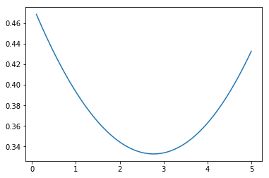

Lucas Tree model and GMM estimation¶
In [31]:
import pandas as pd
import numpy as np
import pandas_datareader.data as web
import matplotlib.pyplot as plt
import datetime
from scipy.optimize import fsolve
from scipy.optimize import broyden1
from scipy.optimize import minimize
from pprint import pprint
%matplotlib inline
In [32]:
def convert_to_daily_with_ffill(df):
'''convert_to_daily_with_ffill
This method converts a dataframe to have a daily index and forward fills all of the missing days. Useful for converting (for example) stock market data to quarterly data when the quarterly return is wanted.
:param df: a pandas.DataFrame to be converted
:returns: a pandas.DataFrame that has been converted
'''
new_idx = pd.date_range('01-01-1950', '07-01-2018')
df = df.reindex(new_idx)
df = df.fillna(method="ffill")
return df
start = datetime.datetime(1950, 1,1)
end = datetime.datetime(2018, 7, 1)
rpce = web.DataReader('PCECC96', 'fred', start, end)
w5000 = web.DataReader('WILL5000INDFC', 'fred', start, end)
w5000 = convert_to_daily_with_ffill(w5000)
gdef = web.DataReader('GDPDEF', 'fred', start, end)
tb = web.DataReader('TB3MS', 'fred', start, end)
df = pd.DataFrame(columns=['rpce', 'w5000', 'tb', 'gdef'], index = rpce.index)
df['rpce'] = rpce
df['w5000'] = w5000
df['gdef'] = gdef
df['inf'] = df['gdef']/df['gdef'].shift(1)
df['w5000_d'] = df['w5000']/df['inf'] # Deflated asset price returns
df['R'] = df['w5000_d'].shift(-1)/df['w5000_d'] # Returns to asset prices
df['tb'] = tb/100. + 1 # Convert to percentage and make a gross return
df = df.dropna(axis=0) # Drop NaNs
df
Out[32]:
| rpce | w5000 | tb | gdef | inf | w5000_d | R | |
|---|---|---|---|---|---|---|---|
| DATE | |||||||
| 1971-01-01 | 2968.902 | 1.00 | 1.0444 | 23.536 | 1.015270 | 0.984959 | 1.122320 |
| 1971-04-01 | 2996.124 | 1.12 | 1.0386 | 23.846 | 1.013171 | 1.105440 | 1.011948 |
| 1971-07-01 | 3020.036 | 1.13 | 1.0540 | 24.088 | 1.010148 | 1.118647 | 0.992965 |
| 1971-10-01 | 3070.230 | 1.12 | 1.0446 | 24.288 | 1.008303 | 1.110777 | 1.046124 |
| 1972-01-01 | 3110.801 | 1.18 | 1.0338 | 24.664 | 1.015481 | 1.162011 | 1.077729 |
| 1972-04-01 | 3170.159 | 1.26 | 1.0371 | 24.815 | 1.006122 | 1.252333 | 1.004674 |
| 1972-07-01 | 3219.095 | 1.27 | 1.0398 | 25.048 | 1.009389 | 1.258186 | 1.020280 |
| 1972-10-01 | 3294.606 | 1.30 | 1.0474 | 25.366 | 1.012696 | 1.283703 | 1.070357 |
| 1973-01-01 | 3354.764 | 1.39 | 1.0541 | 25.661 | 1.011630 | 1.374020 | 0.917591 |
| 1973-04-01 | 3353.357 | 1.28 | 1.0626 | 26.052 | 1.015237 | 1.260789 | 0.918401 |
| 1973-07-01 | 3365.331 | 1.18 | 1.0801 | 26.549 | 1.019077 | 1.157910 | 1.075416 |
| 1973-10-01 | 3355.493 | 1.27 | 1.0722 | 27.077 | 1.019888 | 1.245235 | 0.890522 |
| 1974-01-01 | 3326.205 | 1.13 | 1.0777 | 27.592 | 1.019020 | 1.108909 | 0.977738 |
| 1974-04-01 | 3337.864 | 1.11 | 1.0833 | 28.248 | 1.023775 | 1.084223 | 0.887369 |
| 1974-07-01 | 3351.624 | 0.99 | 1.0755 | 29.067 | 1.028993 | 0.962105 | 0.747144 |
| 1974-10-01 | 3302.477 | 0.74 | 1.0746 | 29.923 | 1.029449 | 0.718831 | 1.101863 |
| 1975-01-01 | 3330.127 | 0.81 | 1.0626 | 30.601 | 1.022658 | 0.792054 | 1.256363 |
| 1975-04-01 | 3385.744 | 1.01 | 1.0561 | 31.059 | 1.014967 | 0.995106 | 1.165059 |
| 1975-07-01 | 3434.088 | 1.18 | 1.0613 | 31.612 | 1.017805 | 1.159358 | 0.882339 |
| 1975-10-01 | 3470.491 | 1.04 | 1.0596 | 32.139 | 1.016671 | 1.022947 | 1.083615 |
| 1976-01-01 | 3539.873 | 1.12 | 1.0487 | 32.473 | 1.010392 | 1.108480 | 1.160979 |
| 1976-04-01 | 3572.443 | 1.30 | 1.0486 | 32.803 | 1.010162 | 1.286922 | 1.020317 |
| 1976-07-01 | 3610.329 | 1.33 | 1.0523 | 33.226 | 1.012895 | 1.313068 | 1.017702 |
| 1976-10-01 | 3657.456 | 1.36 | 1.0492 | 33.815 | 1.017727 | 1.336311 | 1.045802 |
| 1977-01-01 | 3699.293 | 1.42 | 1.0462 | 34.359 | 1.016088 | 1.397517 | 0.945578 |
| 1977-04-01 | 3719.733 | 1.34 | 1.0454 | 34.841 | 1.014028 | 1.321462 | 1.046546 |
| 1977-07-01 | 3755.186 | 1.40 | 1.0519 | 35.270 | 1.012313 | 1.382971 | 0.962486 |
| 1977-10-01 | 3811.769 | 1.36 | 1.0616 | 36.036 | 1.021718 | 1.331091 | 1.021521 |
| 1978-01-01 | 3833.825 | 1.38 | 1.0644 | 36.573 | 1.014902 | 1.359738 | 0.967781 |
| 1978-04-01 | 3915.624 | 1.34 | 1.0629 | 37.242 | 1.018292 | 1.315929 | 1.098702 |
| ... | ... | ... | ... | ... | ... | ... | ... |
| 2010-07-01 | 10063.083 | 41.37 | 1.0016 | 101.429 | 1.004566 | 41.181971 | 1.125067 |
| 2010-10-01 | 10166.127 | 46.57 | 1.0013 | 101.949 | 1.005127 | 46.332466 | 1.112449 |
| 2011-01-01 | 10217.123 | 51.77 | 1.0015 | 102.399 | 1.004414 | 51.542493 | 1.062445 |
| 2011-04-01 | 10237.676 | 55.16 | 1.0006 | 103.145 | 1.007285 | 54.761053 | 1.009587 |
| 2011-07-01 | 10282.234 | 55.62 | 1.0004 | 103.768 | 1.006040 | 55.286070 | 0.840235 |
| 2011-10-01 | 10316.777 | 46.52 | 1.0002 | 103.917 | 1.001436 | 46.453298 | 1.115234 |
| 2012-01-01 | 10379.022 | 52.08 | 1.0003 | 104.466 | 1.005283 | 51.806304 | 1.128493 |
| 2012-04-01 | 10396.630 | 58.73 | 1.0008 | 104.943 | 1.004566 | 58.463053 | 0.967372 |
| 2012-07-01 | 10424.119 | 56.86 | 1.0010 | 105.508 | 1.005384 | 56.555512 | 1.064553 |
| 2012-10-01 | 10453.204 | 60.45 | 1.0010 | 105.935 | 1.004047 | 60.206340 | 1.000469 |
| 2013-01-01 | 10502.300 | 60.47 | 1.0007 | 106.349 | 1.003908 | 60.234600 | 1.108354 |
| 2013-04-01 | 10523.929 | 66.90 | 1.0006 | 106.570 | 1.002078 | 66.761266 | 1.038858 |
| 2013-07-01 | 10573.135 | 69.69 | 1.0004 | 107.084 | 1.004823 | 69.355490 | 1.065368 |
| 2013-10-01 | 10662.222 | 74.27 | 1.0005 | 107.636 | 1.005155 | 73.889114 | 1.092243 |
| 2014-01-01 | 10713.384 | 81.04 | 1.0004 | 108.083 | 1.004153 | 80.704842 | 1.026866 |
| 2014-04-01 | 10805.115 | 83.34 | 1.0003 | 108.692 | 1.005635 | 82.873047 | 1.047802 |
| 2014-07-01 | 10909.862 | 87.23 | 1.0003 | 109.187 | 1.004554 | 86.834542 | 0.982173 |
| 2014-10-01 | 11045.225 | 85.41 | 1.0002 | 109.345 | 1.001447 | 85.286585 | 1.065065 |
| 2015-01-01 | 11145.286 | 90.82 | 1.0003 | 109.326 | 0.999826 | 90.835784 | 1.008585 |
| 2015-04-01 | 11227.947 | 92.11 | 1.0002 | 109.916 | 1.005397 | 91.615578 | 1.011488 |
| 2015-07-01 | 11304.567 | 92.98 | 1.0003 | 110.286 | 1.003366 | 92.668060 | 0.923230 |
| 2015-10-01 | 11379.273 | 85.73 | 1.0002 | 110.513 | 1.002058 | 85.553906 | 1.058437 |
| 2016-01-01 | 11430.549 | 90.61 | 1.0026 | 110.582 | 1.000624 | 90.553462 | 1.008346 |
| 2016-04-01 | 11537.728 | 91.86 | 1.0023 | 111.249 | 1.006032 | 91.309248 | 1.027938 |
| 2016-07-01 | 11618.098 | 94.18 | 1.0030 | 111.628 | 1.003407 | 93.860240 | 1.041101 |
| 2016-10-01 | 11702.120 | 98.21 | 1.0033 | 112.190 | 1.005035 | 97.718031 | 1.042949 |
| 2017-01-01 | 11758.040 | 102.42 | 1.0051 | 112.746 | 1.004956 | 101.914922 | 1.059697 |
| 2017-04-01 | 11852.958 | 108.27 | 1.0080 | 113.029 | 1.002510 | 107.998915 | 1.026918 |
| 2017-07-01 | 11916.576 | 111.48 | 1.0107 | 113.614 | 1.005176 | 110.905988 | 1.044363 |
| 2017-10-01 | 12035.227 | 116.50 | 1.0107 | 114.275 | 1.005818 | 115.826130 | 1.064069 |
188 rows × 7 columns
In [33]:
class GMMEstimator_q1(object):
"""A GMM Estimator for question 1"""
def __init__(self, df):
self.df = df
self.beta = 0.99 # Since we are not changing this, I make it an instance property from the start.
def calculate_m(self, gamma):
'''Define the SDF given values for beta and gamma'''
self.df['m'] = self.beta*(self.df['rpce'].shift(-1)/self.df['rpce'])**(-gamma)
#self.df = self.df.dropna(axis=0).copy()
def objective(self,gamma):
self.calculate_m(gamma)
l = self.df.shape[0]
df = self.df.dropna(axis=0).copy()
self.df['ip'] = (1/l)*(self.df['m']*self.df['R'] - 1)
return np.dot(self.df['ip'].values, self.df['ip'].values)
#cov = self.df[['m', 'R']].cov()['R']['m']
#ER = self.df['R'].mean()
#Em = self.df['m'].mean()
#dif = 1 -
#print(cov + ER*Em)
#return (1 - cov - ER*Em)**2
def estimate(self, init):
'''Estimate values for beta and gamma'''
s = minimize(self.objective, init)
print(s)
e = GMMEstimator_q1(df)
#e.objective(2.0)
e.estimate(3.0)
fun: nan
hess_inv: array([[1]])
jac: array([nan])
message: 'Desired error not necessarily achieved due to precision loss.'
nfev: 3
nit: 0
njev: 1
status: 2
success: False
x: array([3.])
In [34]:
class GMMEstimator_q3(object):
def __init__(self, df):
self.df = df
self.beta = 0.99 # Since we are not changing this, I make it an instance property from the start.
def calculate_m(self, gamma):
'''Define the SDF given values for beta and gamma'''
self.df['m'] = self.beta*(self.df['rpce'].shift(-1)/self.df['rpce'])**(-gamma)
def objective(self,gamma):
self.calculate_m(gamma)
#print(self.df)
#cov = self.df[['m', 'R']].cov()['R']['m']
#ER = self.df['R'].mean()
#Em = self.df['m'].mean()
self.df['inv_m'] = 1/self.df['m']
self.df['diff'] = (self.df['tb'] - self.df['inv_m'])**2
new_df = df.dropna(axis=0)
ob = new_df['diff'].values
#cov = df[['m', 'R']].cov()["R"]['m']
#ER = df['R'].mean()
#Em = df['m'].mean()
return np.sum(ob)
def estimate(self, init):
'''Estimate values for beta and gamma'''
#s, info, ier, msg = fsolve(self.objective, init, full_output=True)
s = minimize(self.objective, init)
pprint(s)
def plot(self, min_value, max_value):
ar = np.linspace(min_value, max_value, 100)
out = [ self.objective(aa) for aa in ar]
plt.plot(ar, out)
plt.show()
e = GMMEstimator_q3(df)
e.plot(0.1, 5.0)
e.estimate(2.5)

{'fun': 0.33268058450798116,
'hess_inv': array([[25.47909069]]),
'jac': array([-1.86264515e-08]),
'message': 'Optimization terminated successfully.',
'nfev': 18,
'nit': 4,
'njev': 6,
'status': 0,
'success': True,
'x': array([2.7733041])}
In [35]:
class GMMEstimator_q4(object):
def __init__(self, df):
self.df = df
def calculate_m(self, params):
'''Define the SDF given values for beta and gamma'''
beta, gamma = params
self.df['m'] = beta*(self.df['rpce'].shift(-1)/self.df['rpce'])**(-gamma)
def objective(self,params):
'''The function to be minimized.'''
self.calculate_m(params)
#print(self.df)
#cov = self.df[['m', 'R']].cov()['R']['m']
#ER = self.df['R'].mean()
#Em = self.df['m'].mean()
self.df['inv_m'] = 1/self.df['m']
self.df['diff'] = (self.df['tb'] - self.df['inv_m'])**2
new_df = self.df.dropna(axis=0)
ob = new_df['diff'].values
ob1 = np.sum(ob)
l = new_df.shape[0]
df = new_df.dropna(axis=0).copy()
df['ip'] = (1/l)*(df['m'].dot(df['R']) - 1)
ob2 = np.dot(df['ip'].values, df['ip'].values)
#cov = df[['m', 'R']].cov()["R"]['m']
#ER = df['R'].mean()
#Em = df['m'].mean()
return ob1 + ob2
def estimate(self, init):
'''Estimate values for beta and gamma'''
#s, info, ier, msg = fsolve(self.objective, init, full_output=True)
s = minimize(self.objective, init)
pprint(s)
def plot(self, min_value, max_value):
ar = np.linspace(min_value, max_value, 100)
out = [ self.objective(aa) for aa in ar]
plt.plot(ar, out)
plt.show()
e = GMMEstimator_q4(df)
e.estimate([0.7, 50.0])
b = np.linspace(0.01, 1.0, 20)
g = np.linspace(0.01, 20.0, 50)
bg = np.array
grid = np.meshgrid(b,g)
print(grid[0].shape, grid[1].shape)
params = []
idx = []
"""
for ii in grid[0].shape[0]:
for jj in grid[0].shape[1]:
i = grid[0][ii,jj]
j = grid[1][ii,jj]
idx.append([ii,jj])
params.append([i,j])
obj = np.zeros(grid[0].shape)
obj_list = []
for kk in params:
obj_list.append(e.objective(kk))
# Now reshape
"""
{'fun': 123.0064128892117,
'hess_inv': array([[4.52509601e-04, 1.52559473e-02],
[1.52559473e-02, 3.08875020e+00]]),
'jac': array([-3.81469727e-06, 0.00000000e+00]),
'message': 'Optimization terminated successfully.',
'nfev': 68,
'nit': 14,
'njev': 17,
'status': 0,
'success': True,
'x': array([0.70945172, 0.7018161 ])}
(50, 20) (50, 20)
---------------------------------------------------------------------------
TypeError Traceback (most recent call last)
<ipython-input-35-a3b2207e57e1> in <module>()
57 idx = []
58
---> 59 for ii in grid[0].shape[0]:
60 for jj in grid[0].shape[1]:
61 i = grid[0][ii,jj]
TypeError: 'int' object is not iterable